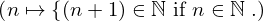
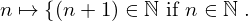
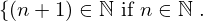
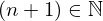
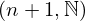

Axiom successor_in_nats of type Forall¶
from the theory of proveit.numbers.number_sets.natural_numbers¶
see dependencies
In [1]:
import proveit
# Automation is not needed when only building an expression:
proveit.defaults.automation = False # This will speed things up.
proveit.defaults.inline_pngs = False # Makes files smaller.
%load_axiom_expr # Load the stored axiom expression as 'stored_expr'
# import the special expression
from proveit.numbers.number_sets.natural_numbers import successor_in_nats
In [2]:
# check that the built expression is the same as the stored expression
assert successor_in_nats.expr == stored_expr
assert successor_in_nats.expr._style_id == stored_expr._style_id
print("Passed sanity check: successor_in_nats matches stored_expr")
In [3]:
# Show the LaTeX representation of the expression for convenience if you need it.
print(stored_expr.latex())
In [4]:
stored_expr.style_options()
In [5]:
# display the expression information
stored_expr.expr_info()
| core type | sub-expressions | expression | |
|---|---|---|---|
| 0 | Operation | operator: 1 operand: 3 |  |
| 1 | Literal |  | |
| 2 | ExprTuple | 3 |  |
| 3 | Lambda | parameter: 15 body: 5 |  |
| 4 | ExprTuple | 15 |  |
| 5 | Conditional | value: 6 condition: 7 |  |
| 6 | Operation | operator: 9 operands: 8 |  |
| 7 | Operation | operator: 9 operands: 10 |  |
| 8 | ExprTuple | 11, 12 |  |
| 9 | Literal |  | |
| 10 | ExprTuple | 15, 12 |  |
| 11 | Operation | operator: 13 operands: 14 |  |
| 12 | Literal |  | |
| 13 | Literal |  | |
| 14 | ExprTuple | 15, 16 |  |
| 15 | Variable |  | |
| 16 | Literal |  |